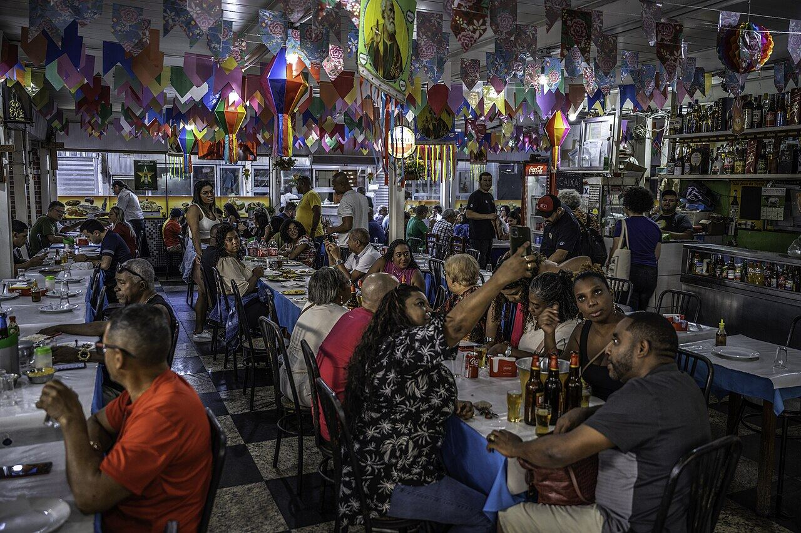
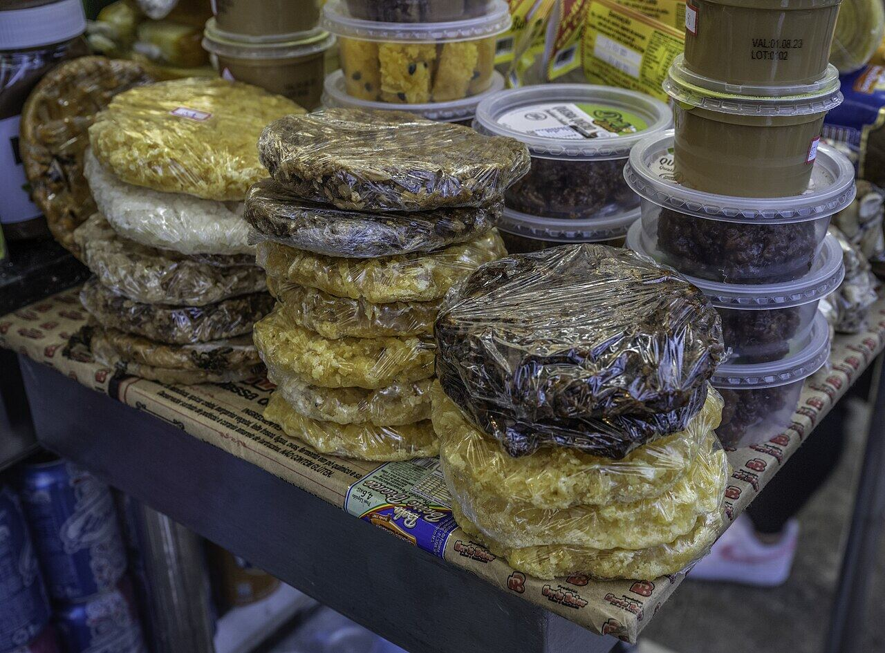
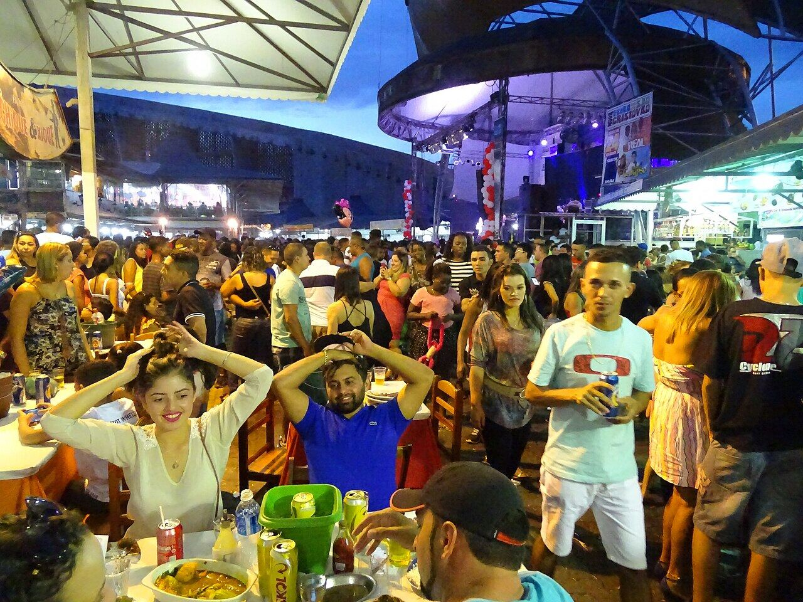

Feira de São Cristóvão
São Cristóvão
Forró, comida nordestina e muita animação nas noites de fim de semana.
Nosso comentário
O Centro Luiz Gonzaga de Tradições Nordestinas é uma grande feira coberta com restaurantes, barracas e palcos de forró. Nas noites de fim de semana, fica cheio de gente dançando e comendo baião de dois, carne de sol e tapioca.
Dicas
- As noites de sábado são as mais animadas.
- Confiram os horários antes de ir.
Fotos do lugar


